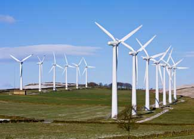

Wind power is the fastest growing form of electricity in the world. According to WorldWatch Institute, in 2007 the world capacity of wind power rose 27 percent to 94,100 megawatts. In the United States alone, 5,244 megawatts of wind power were added, enough to power 4.5 million homes. This growth is above recent projections and puts wind power on track to be a prime competitor in the power industry.
But that’s just the beginning. Wind power has enormous potential that is just starting to be tapped. In fact, three states - Kansas, North Dakota and Texas - have the wind capacity to power the entire country. Click here to watch the growth in U.S. wind power over the last 10 years and here to find wind projects near you.
One attraction of wind power is that it can replace electricity from coal plants, which currently provide 54 percent of the United States’ electricity. The Union of Concerned Scientists says coal plants are the single biggest air polluter in the United States. Coal plants pollute the atmosphere at almost every level of production: Mining, transportation and storage all cause different forms of pollution. Per year, there are approximately 23,000 deaths in the United States from coal power plant pollution. In contrast, wind power creates no water or air pollution, and has no emissions or waste from its distribution.
The rising and unstable price of conventional electricity over the years is another reason for the growth of wind power. In Austin, Texas, wind energy is bought at a fixed price, therefore giving customers a stable price for electricity. According to the Earth Policy Institute, in 2005 wind-generated electricity cost less than conventional electricity. This switch was due to rising natural gas prices and declining wind energy prices. In the ’80s, wind power was about 25 cents/kWh, but by 2005 that dropped to 4 to 6 cents/kWh. Although wind power prices have trended up in the last few years, they still remain cost-competitive with other forms of energy.
But even though wind power is cheap to produce, building wind-electric plants requires considerable capital investment. In the United States, getting investors interested in these projects can be difficult because of the government’s on-again, off-again support for wind power through tax credits and other legislation.
Currently, the growth of wind power is promoted by the production tax credit, which goes to renewable energy facilities for the first 10 years the turbine operates. The credit is good through December 31, but Congress recently failed to extend the tax credit in the 2007 energy bill. New legislation will have to be passed in order for the credit to apply thereafter.
A few other challenges have the potential to slow wind power’s progress. USA Today reports that there is a shortage of power lines that wind farms can hook into. Current power lines are nearing capacity and many wind farms are not built close to existing lines. A decision on a solution to this problem will need to be made in order for wind power growth to continue.
Additionally, General Electric has confirmed there is also a shortage of wind turbines. At the end of 2007, $11 billion in wind turbines were on backorder, but now that amount has grown to $12 billion. Facilities must wait a year or year and a half to receive a turbine. The shortage is because of the high demand and the time it takes to engineer the most efficient turbine possible. The result is many projects being put on hold.
These obstacles are partly because of the high demand and exceptional growth of the industry. Nevertheless, new wind farms are popping up all over the world. The outlook for the wind industry once it blows past these drawbacks is very good.
To learn more about small-scale, residential wind turbines read New and Improved Wind Power. Or, learn more about wind farms in Whither Wind.
|
 ISTOCKPHOTO/BRIAN JACKSON In the United States, three states - Kansas, North Dakota and Texas - have enough wind capacity to power the entire country. Building wind farms like this one will help us reach that potential. |
|
|